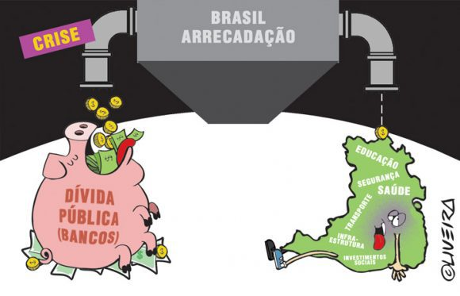

O que é divida pública
A dívida pública representa o total de recursos que o governo deve, tanto internamente quanto ao exterior. Ela é utilizada para financiar despesas públicas e investimentos, mas quando cresce de forma excessiva pode gerar impactos negativos na economia.
Dívida pública é o dinheiro que o governo deve.
Assim como uma pessoa pega empréstimo quando não tem dinheiro suficiente
🧠 Por que o governo fica devendo?
Ele gasta mais do que arrecada com impostos. Precisa pagar:
- salários
- aposentadorias
- hospitais
- escolas
- estradas
- programas sociais
Isso é gasto público.

O governo paga dividas fazendo mais dividas e nao sobra muito para fazer investimentos
Relação do trabalho
Bom, assim como qualquer pessoa, o governo tem receitas e gastos. A principal receita do governo são os impostos que a população e as empresas pagam, e esse dinheiro é usado em áreas como saúde, educação e aposentadoria.
o governo gasta mais do que arrecada, ele precisa pegar dinheiro emprestado, e o acúmulo desses empréstimos ao longo do tempo é o que forma a dívida pública.
opção seria imprimir mais dinheiro, mas isso gera inflação, o que não é algo positivo. Então, uma das formas do governo captar recursos é por meio dos títulos públicos. Qualquer pessoa pode comprar esses títulos pelo Tesouro Direto, emprestando dinheiro ao governo e recebendo esse valor de volta com juros.
Relacionando isso com o trabalho, a carteira dos clientes possui títulos públicos do Brasil, dos Estados Unidos e da Europa. No Brasil, esse dinheiro é investido principalmente no Tesouro Selic e em títulos prefixados, que são considerados investimentos muito seguros e com boa rentabilidade, especialmente em um cenário de juros elevados.